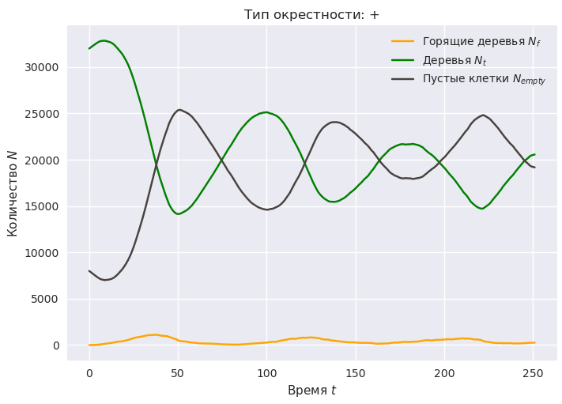
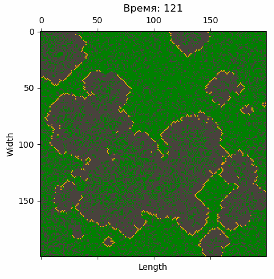

Лабораторная работа №1 - Клеточный автомат “Лесной пожар”#
Задача#
Лес моделируется клеточным полем размером \(w \times h\). В \(n\) клетках поля изначально есть деревья: \(n \le w \cdot h\), в остальных клетках деревьев нет. Цвет клетки с деревом зелёный, без дерева - чёрный, с горящим деревом - оранжевый. Изначально имеется \(f\) горящих деревьев. Их координаты - ячейки - генерируются случайным образом.
Правила клеточного автомата:
Дерево, в окрестности которого есть хотя бы одно горящее дерево, загорается.
На месте сгоревшего дерева образуется пустая ячейка.
На месте пустой ячейки с вероятностью \(P_{\rm g}\) вырастает дерево, если в окрестности нет горящих деревьев.
Любое дерево может загореться с заданной вероятностью \(P_{\rm f}\).
Требуется:
Запрограммировать клеточный автомат (КА), описывающий эволюцию горящего леса.
Исследовать процесс лесного пожара, накапливая статистику количества горящих \(a_{\rm f}\) и негорящих \(a_{\rm t}\) деревьев, пустых ячеек \(a_{\rm e}\) и др.
Исследовать влияние двух форм окрестности \(\Theta = \{\theta_+, \theta_\times\}\) (”\(+\)”-окрестность и окрестность фон-Неймана соответственно) на процесс распространения пожара.
Обработав накопленную статистику, построить зависимость \(a_{\rm f}(t,\Theta,\ldots)\) распространения пожара в зависимости от времени \(t\), формы окресности \(\Theta\) и/или от других факторов.
Оценить производительность компьютерной модели.
Составить отчёт о лабораторной работе (ЛР). В отчёте ответьте на вопросы.
Требования к отчёту#
Отчёт должен быть оформлен строго в соответствии с требованиями кафедры и содержать:
Титульный лист.
Цели и задачи лабораторной работы.
Теоретическая часть:
краткие теоретические сведения о КА, их применении;
достоинства и недостатки клетчатых автоматов;
описание алгоритма моделирования (блок-схема или псевдокод).
Практическая часть:
графики;
комментарии к графикам, поясняющие полученные результаты.
Заключение.
Ответы на поставленные вопросы.
Цель ЛР - закрепить знания и получить опыт создания и применения КА для моделирования различных процессов.
Задачи ЛР соответствуют тому, что требуется.
Варианты#
Группа делится на 4 варианта.
Общие исходные данные:
\(w = 200\);
\(h = 200\);
\(n = \eta \cdot w \cdot h\), где \(\eta\) - заполненность поля деревьями: \(0 \le \eta \le 1\);
\(\eta = 0.8\);
\(f = 1\);
\(P_{\rm f} = 2 \cdot 10^{-5}\);
\(P_{\rm g} = 0.02\);
“затравка” генератора псевдослучайных чисел - \(1097\);
число итераций по времени - \(500\).
Изменения в исходных данных в зависимости от варианта:
вариант 1 - три различных значения вероятности воспламенения дерева: \(P_{\rm f} = \{2, 3, 4\} \cdot 10^{-5}\).
вариант 2 - варьируется вероятность вырастания нового дерева: \(P_{\rm g} = \{8, 16, 32\} \cdot 10^{-3}\).
вариант 3 - изменять начальную заполненность поля: \(\eta = \{\frac{1}{3}, \frac{2}{3}, 1\}\).
вариант 4 - рассмотреть различное число изначально горящих деревьев: \(f = \{1, 3, 9\}\).
Код#
Далее приведён шаблон кода, который может помочь в разработке КА.
Для начала импортируем библиотеки, которые точно понадобятся:
import matplotlib.pyplot as plt
import numpy as np
Также инициализируем наш глобальный генератор случайных чисел с заданной “затравкой” seed:
rs = np.random.RandomState(seed=1097)
Note
На практике полезно инициализировать генератор случайных чисел явно. Это позволяет воспроизводить результаты псевдослучайных процессов разными пользователями на различных устройствах, что важно, когда речь идёт о научном исследовании.
Возможные окрестности#
Окрестности КА можно описать с помощью класса перечисления Enum из стандартной библиотеки enum.
Для этого достаточно создать класс, унаследованный от Enum, и перечислить в нём состояния:
from enum import Enum
class NeighborhoodType(Enum):
CROSS = "+"
NEUMAN = "x"
Описание состояний клеток#
Поскольку число возможных состояний клеток конечно, описать эти состояния можно так же с помощью Enum:
class CellState(Enum):
EMPTY = 0
FIRING = 1
TREE = 2
Функция визуализации#
Опишем функцию визуализации КА.
Для начала создадим цветовую карту из трёх цветов: тёмно-серого (угольного), оранжевого и зелёного.
# Для создания цветовой карты из массива цветов
# нам понадобится конструктор ListedColormap
from matplotlib.colors import ListedColormap
# Массив из указанных трёх цветов...
colors = ["#49423D", "orange", "green"]
# и сама цветовая карта
cmap_forest = ListedColormap(colors)
Сопоставляем цвета с состояниями клетки: угольный - сгоревшее, оранжевый - горящее и зелёный - здоровое дерево.
class CellColor(Enum):
EMPTY = colors[0]
FIRING = colors[1]
TREE = colors[2]
Собственно, сама функция визуализации:
def plot_grid(ca, ax=None, **kw):
# ca - клеточный автомат
if ax is None:
# Не был передан уже созданный график
fig, ax = plt.subplots()
# Визуализируем КА, используя нашу цветовую карту
ax.matshow(ca, cmap=cmap_forest)
# В ключевых аргументах kw можно передать заголовок графика,
# а можно не передавать. В последнем случае по умолчанию
# в title будет лежать пустая строка.
# В данной работе в title имеет смысл записать тип окрестности.
title = kw.get("title", "")
# Наводим красоту
ax.set(
xlabel="Length",
ylabel="Width",
title=title,
aspect="equal"
)
# Возвращаем построенный график
return fig, ax
График строится функцией matshow (matrix show).
В данном случае КА (ca) мы будем представлять в виде двухмерной матрицы. В зависимости от числа в ячейке этой матрицы matshow назначит конкретный цвет из цветовой карты. В нашем случае, например, при ca[3, 7] = 1 на графике в 4-й строке и 8-м столбце будет клетка с оранжевым цветом (FIRING).
На этом подготовительный этап заканчивается.
Создание и инициализация клеточного автомата#
Один из вариантов структуры данных для хранения КА - это матрица размера \(w \times h\). Для создания клеточного поля предлагается описать функцию:
def create_ca(w, h):
# w, h - размеры КА
pass
return ...
Attention
Здесь и далее вместо заглушки pass должна быть ваша реализация.
Вместо многоточих - имя вашей переменной (переменных).
Теперь необходимо задать начальное состояние КА ca - заполнить деревьями в количестве \(n = \eta \cdot w \cdot h\) и “поджечь” \(f\) случайных из них. Доступ к генераторам случайных чисел осуществляется через наш генератор rs.
def init_state(ca, eta):
# ca - клеточный автомат
# eta - доля клеток с деревьями
pass
Описание эволюции клеточного автомата#
def update(grid, neighborhood_type):
"""Обновление всего КА."""
pass
# Вернуть КА в новом состоянии
return ...
def update_cell(grid, new_grid, cell, neighborhood):
"""Обновление состояния заданной клетки `cell`."""
pass
def get_cross_neighborhood(cell, grid_shape):
"""Крестовая окрестность."""
pass
# Вернуть индексы окрестных ячеек
return ...
def get_neuman_neighborhood(cell, grid_shape):
"""Окрестность фон-Неймана."""
pass
# Вернуть индексы окрестных ячеек
return ...
В процессе моделирования необходимо сохранять данные для формирования статистики. Для упрощения этой задачи можно завести отдельный класс с функциональностью добавления, хранения и визуализации статистики:
class Statistics:
def __init__(self):
# Массив шагов по времени
self.t = []
# Количество горящих деревьев на временных шагах
self.a_f = []
# Количество здоровых деревьев на временных шагах
self.a_t = []
# Количество пустых клеток на временных шагах
self.a_e = []
def append(self, t, ca):
"""Добавить данные КА `ca` в на шаге времени `t`."""
pass
def plot_firing_time(self, ax=None, **kw):
"""График числа горящих деревьев от времени."""
if ax is None:
_, ax = plt.subplots()
pass
return ax
def plot_trees_time(self, ax=None, **kw):
"""График числа здоровых деревьев от времени."""
if ax is None:
_, ax = plt.subplots()
pass
return ax
def plot_empty_time(self, ax=None, **kw):
"""График числа пустых клеток от времени."""
if ax is None:
_, ax = plt.subplots()
pass
return ax
Запуск моделирования#
Для запуска моделирования предлагается описать отдельную функцию, принимающую на вход КА ca и тип окрестности neighborhood_type и возвращающую накопленную статистику:
def simulate(ca, neighborhood_type):
"""Смоделировать процесс лесного пожара."""
stat = Statistics()
# В цикле по времени от 0 до sim_time
# вызываем функцию обновления КА
# и добавляем результат в статистику.
pass
return stat
Последовательность моделирования проста:
Инициализируем исходные данные:
# "Затравка" для генератора псевдослучайных чисел
seed = 1097
# Размеры клеточного поля
w, h = 200, 200
# Доля клеток с деревьями
eta = 0.8
# Число изначально горящих деревьев
f = 1
# Вероятность вырастания нового дерева
p_g = 0.02
# Вероятность случайного воспламенения дерева
p_f = 2e-5
# Модельное время (число обновлений автомата)
sim_time = 500
Создаём КА и запускаем симуляцию:
# Создаём "пустой" КА
ca = create_ca(w, h)
# Задаём начальное состояние КА
init_state(ca, eta)
# Также стоит запомнить исходное состояние
initial_ca = np.copy(ca)
# Симулируем.
# В данном случае рассматриваем "+"-окрестность
stat = simulate(ca, NeighborhoodType.CROSS)
# Обрабатываем результаты, строим графики и пр.
Ожидаемый результат работы#
Ожидаемый результат моделирования представлен на картинках ниже.


С помощью Python несложно сделать анимацию эволюции КА.

Также стоит обработать статистику, получив конкретные числа, например, среднее количество горящих деревьев, среднее квадратическое отклонение этого количества и т.п. Полезные инструмент для этого содержатся в модуле stats пакета SciPy.
Вопросы#
По вашему мнению, достаточно ли реалистична разработанная модель лесного пожара?
Можно ли её усовершенствовать, сделав более реалистичной?
Достаточна ли вычислительная производительность программы на ваш взгляд? Можно ли её улучшить? Как?
См. также#
Построение графиков matplotlib подробнее описано в справочнике кафедры СМ6.
Для обработки статистики крайне полезным инструментом является модуль
statsиз пакета SciPy.